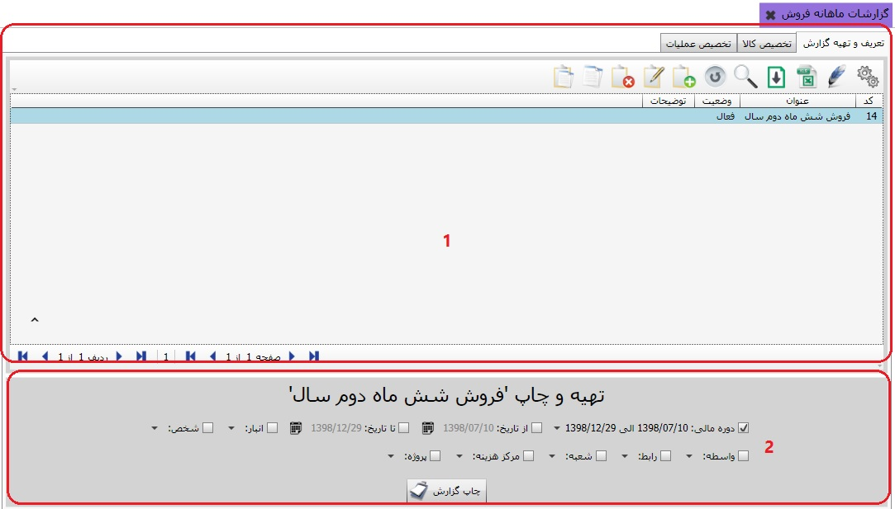
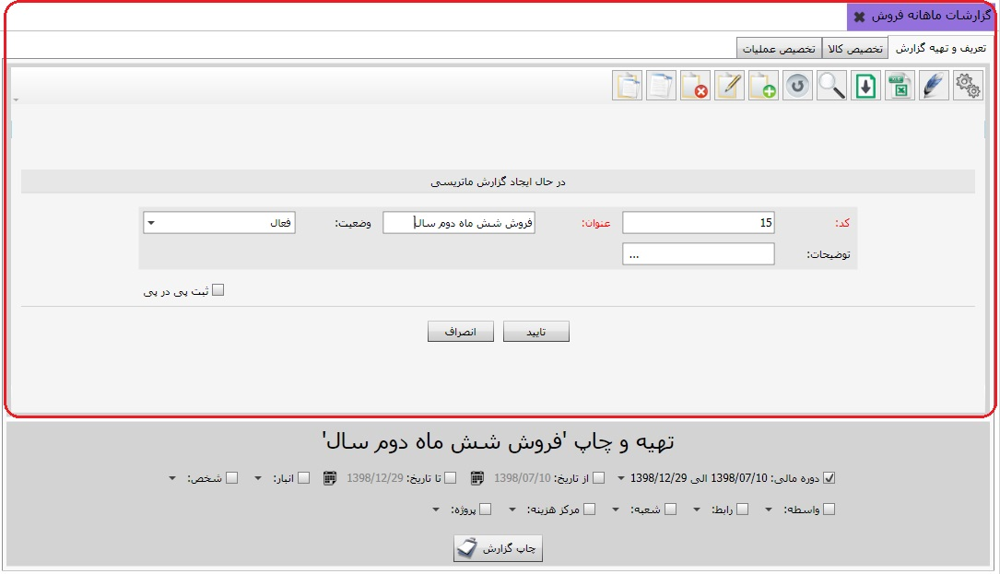
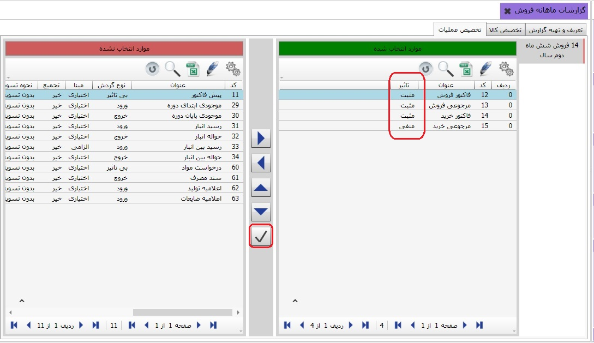

نحوه ی تهیه ی گزارش در گزارشات ماهانه فروش درست مثل گزارشات ماتریسی می باشد، با این تفاوت که در این بخش شما می توانی د به تفکیک ماهها مقدار، مبلغ و جمع تراکنش فروش هر ماه را مشاهده کنید.
تصویر بالا از دو کادر تشکیل شده است که در زیر به شرح هر کدام می پردازیم :
کادر شماره 1: این کادر شامل سه تب می باشد، تب اول به تعریف و تهیه ی گزارش اختصاص دارد، برای تعریف و تهیه ی یک گزارش کافی است از نوار ابزار کلید اضافه (F8) را بزنید پنجره ی زیر باز می شود:
کد گزارش به صورت پیش فرض از سوی سیستم انتخاب می شود، عنوان گزارش مورد نظر خود را در فیلد عنوان پر کنید، و کلید تایید را بزنید، حالا به تب دوم از کادر یک بروید:

در تصویر بالا گزارشی که در تب اول تعریف کرده بودید با کادر قرمز رنگ مشخص شده است، در این مرحله ابتدا باید گزارش مورد نظر خود را انتخاب کنید سپس کالای مورد نظر خود را به وسیله ی فلشها به گزارش تخصیص دهید و یا از تخصیص خارج کنید. به تب سوم از کادر یک می رویم:

در این قسمت ابتدا گزارش مورد نظر خود را انتخاب کنید، سپس عملیات مورد نظر را انتخاب کنید، حالا عملیات مورد نظر را با استفاده از فلش راست گرد به سمت راست منتقل کنید و یا با استفاده از فلش چپ گرد از تخصیص خارج کنید.
با استفاده از این کلید می توانید تاثیر عملیات بر گزارش را تعیین کنید. در نهایت بعد از این که تنظیمات لازم را در تبهای کادر یک انجام دادید به کادر دوم باز میگردیم، کادر دوم تشکیل شده از یک سری فیلتر می باشد که بعد از تعیین کردن آنها با کلیک کردن بر روی چاپ گزارش می توانید گزارش مورد نظرتان را تعیین کنید.